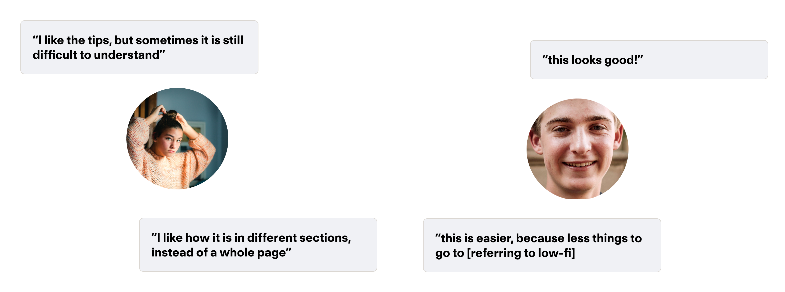

Context
Project -
Computer science is one of the hottest fields in the market, with less technical positions are being asked to become familiar with industry-standard tools in many companies, making technological literacy invaluable. One key competency is using Git to collaborate with other developers and practice safe software management practices. To take advantage of this ubiquity, we wanted to introduce GitHub, the largest provider for Git and version control, to younger audiences.
The reason for this is simple - from a user perspective, starting to learn the tools of the trade earlier allows you to accelerate your early career growth. From the company's perspective, they can leverage this rapid influx of new practitioners into added market share by building their brand from the newest, and youngest developers.
Thus, targeting pre-teens and teens in the middle school age range would allow us to develop a new simplified model of version control - GitHub for Kids.
Role -
Timeline: Q2 2023
Role: Lead Designer
Collaborators: Thomas Fratantoni, Jing Liang
Tools used: Figma, Zoom
Tags: UX Design, UX Research, IxD

Business Case
Incentive -
Gain market share and increase brand loyalty
Increase Usability
Desired Outcome -
Increased satisfaction with experience
+20% onboarding completion
Problem
Pre-teens struggle with navigating the initial setup and onboarding process when starting to use GitHub, which leaves them feeling overwhelmed, leading to drop-off altogether. They need a simplified flow that would allow them to easily understand and perceive the next best action during setup in order to follow safe and modern version control practices.
Approach: Decomposition
Research -
Challenge: Find Target User, and understand what exactly is their current painpoint in onboarding
Approach: Conduct observational user testing studies to gain qualitative data
Outcome: Persona developed, pain point found


How Might We ...
Simplify the GitHub onboarding process to engage a younger audience?
Ideation -
Challenge: Ideate on potential ways to simplify terms, and explain things in a way that a younger audience would understand
Approach: Sketch, test and integrate
Outcome: Flow of use, core idea

Solution
Prototyping -
Challenge 3: Build out our idea into a higher fidelity prototype which could be tested.
Approach: Develop multiple representations of what screens could look like
Outcome: 1 Full Flow of screens, 3 Alternative Screens for flow
Solution Introduction -
The core part of this solution is introducing a stepper wizard that delivers helpful "octotips"

Project Types -
Choosing a project type speeds up the repo creation process by pre loading helpful licenses, folder structure and file types.

Feature Gate -
This feature uses a neutral point of entry which preserves the normal point of entry for non-targeted user. By default this would come on for first time users.
Explaining the functionalities -
From our user research we realized that for first time and younger users, understanding the buttons and their terminology can be difficult. To target this pain point, I decided to use metaphors and kid friendly language in helpful tool tips that auto play on first time activation of a repo.
Testing
MVP Validation -
I tested this prototype with target users that reflected our core persona, using an observational user test.
Some of the key insights, as extracted from testing:
Takeaway
Our design helped pre-teens understand and conceptualize the onboarding process by breaking it down into more manageable steps.
Iteration
Making tweaks to address user concern -
From our user testing we wanted to add additional state and hover indicators to make sure our users knew what affordances were possible.

Results
Outcome -
80%
satisfaction
Outcome -
100%
onboarding completion rate
Prototype
Full click through in video format.
Key Takeaways
This project was really fun, as it was my final project that I've been able to complete while at UC San Diego. It has been heartwarming to see how far my design skills have progressed in relation to some of the first projects that I completed in my time here, and I look back fondly on this experience. I am excited to continue to grow and apply what I learned here in new experiences, and see where that takes me.
The one skill I feel like I really developed in this project was learning how to operate under pressure and as quickly as possible. A lot of the deadlines and turnaround for this project were week to week, and I had to quickly find the best direction. It helped me learn how to navigate ambiguity and access options rapidly, as well as learn how to get detached from decisions.
Next Steps
A follow up on this project that I would do if I was given more time would be to see the influence of color on perception and engagement for children's use. One hypothesis that I had was that children would engage more with bright and colorful web elements, but I decided against that in favor of staying inline with GitHub Brand guidelines. I would love to conduct a more formal experiment to see how this assumption fares.